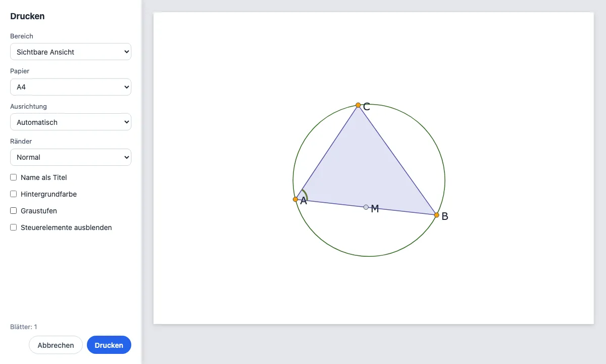
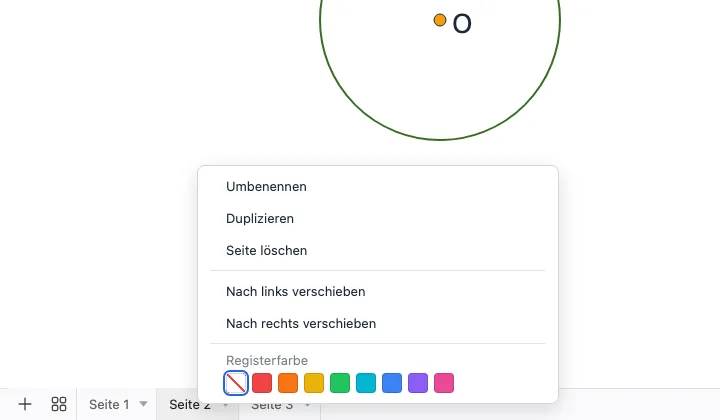

Öffnen und Speichern
Öffnen
Öffnen lädt eine Datei:
| Endung | Herkunft |
|---|---|
.dgo |
DocGeo, eigenes Format |
.dgp |
DGPad, importiert |
.ggb |
GeoGebra, importiert |
Man kann das Symbol der Datei auch auf die Seite ziehen, im Editor wie im Player.
Die geöffnete Figur ersetzt die aktuelle Figur und leert den Rückgängig-Verlauf.
Eine Online-Figur öffnet sich auch über einen Link (siehe Eine Figur per Link teilen).
Das Menü Datei bietet auch Öffnen… (Strg O) und Neue Figur, die mit einer leeren Figur beginnt.
Zuletzt geöffnete Dokumente
Datei › Zuletzt geöffnete Dokumente listet die zehn zuletzt geöffneten oder gespeicherten Figuren auf, die neueste zuerst: in Chrome und Edge die Dateien des Computers, in allen Browsern die über einen Link geöffneten Figuren. Der Browser kann erneut um die Erlaubnis bitten, die Datei zu lesen. Eine inzwischen verschobene, umbenannte oder gelöschte Datei wird gemeldet und aus der Liste entfernt. Liste leeren leert sie.
Unvollständiger Import
Ein nicht unterstütztes Element aus DGPad oder GeoGebra wird samt seinen abhängigen Objekten ignoriert; der Hinweis listet sie auf („Nicht importiert: …“). Einzelheiten unter Import aus DGPad und GeoGebra.
Speichern
, Datei › Speichern oder
Strg S speichert die Figur als
.dgo. Die Ansicht (Zoom, 3D-Ausrichtung,
Koordinatensystem) wird mitgespeichert.
In Chrome und Edge speichert DocGeo wie eine Anwendung: Beim
ersten Speichern wird gefragt, wohin die Datei soll, danach wird
sie ohne Rückfrage ersetzt. Eine mit
geöffnete oder auf die Seite gezogene
.dgo-Figur wird in ihre Datei zurückgeschrieben;
der Browser fragt einmal nach der Erlaubnis, sie zu ändern. Eine
DGPad- oder GeoGebra-Figur wird nie überschrieben: Beim ersten
Speichern entsteht eine .dgo-Datei.
Speichern unter… (Strg
Umschalt S) wählt eine andere Datei.
Der Dateiname steht am Ende der Menüleiste; ein roter Punkt zeigt nicht gespeicherte Änderungen an. Er verschwindet beim Speichern oder wenn man bis zum gespeicherten Stand rückgängig macht. Verschieben oder Zoomen der Ansicht gilt nicht als Änderung.
In anderen Browsern (Firefox, Safari) oder wenn DocGeo in eine
andere Seite eingebettet ist, lädt das Speichern die Figur
herunter, unter dem Namen der geöffneten Figur (figure.dgo
bei einer neuen Figur).
.dgo ist das einzige Speicherformat: Eine Figur aus
DGPad oder GeoGebra zu öffnen und dann zu speichern, wandelt sie
um.
Eine nicht gespeicherte Figur wiederherstellen
Solange eine Figur nicht gespeicherte Änderungen hat, bewahrt DocGeo eine Kopie davon im Browser auf. Schließt sich der Editor, bevor sie gespeichert ist (Fenster versehentlich geschlossen, Absturz), erscheint sie mit Datum unter Nicht gespeicherte Figuren oben in Datei › Zuletzt geöffnete Dokumente: Ausgewählt kommt sie zurück, weiterhin als nicht gespeichert markiert. Diese Kopien werden vierzehn Tage lang aufbewahrt, höchstens zehn; Liste leeren löscht sie ebenfalls.
Diese Kopie bleibt im Browser dieses Computers: Sie ersetzt das Speichern nicht. Ist DocGeo in eine andere Seite eingebettet, wird nichts aufbewahrt.
Datei › Drucken… (Strg P) zeigt die Vorschau der Blätter neben ihren Einstellungen. Drucken öffnet dann den Druckdialog des Browsers, der auch als PDF speichern kann.

Die Figur füllt das Blatt bis zu den Rändern: Geraden und Kurven reichen bis zum Rand. Anfangs wird sie nie vergrößert: Linien und Beschriftungen behalten ihre Größe auf dem Bildschirm.
- Ziehen auf einem Blatt verschiebt die Figur, das Mausrad zoomt sie. Die Ansicht des Editors ändert sich nicht.
- Bereich: Sichtbare Ansicht zentriert das Blatt auf das, was der Bildschirm zeigt, ohne den von der Werkzeugpalette oder den Eigenschaften verdeckten Teil; Nur die Figur zentriert es auf die gezeichneten Objekte.
- Papier, Ausrichtung (Automatisch: nach dem Bereich) und Ränder. Eine Änderung dieser Einstellungen, des Bereichs oder des Titels richtet die Blätter neu aus.
- Name als Titel schreibt den Namen der Figur oder der Seite oben auf das Blatt; Hintergrundfarbe druckt den Hintergrund der Figur; Graustufen entfernt die Farben; Steuerelemente ausblenden entfernt Schieberegler, Kontrollkästchen, Eingabefelder, Auswahllisten und Schaltflächen.
- In einer Arbeitsmappe druckt Alle Tabs ein Blatt pro Tab.
Esc oder Abbrechen schließt die Vorschau. Die Einstellungen bleiben bis zum Schließen des Editors erhalten.
Arbeitsmappen: mehrere Tabs
Eine Arbeitsmappe fasst mehrere Figuren, jede in ihrem Tab, in
einer einzigen .dgo-Datei zusammen. Die Tabs unter
der Figur zeigen jeweils eine davon.

- Datei › Neuer Tab fügt nach den anderen einen leeren Tab hinzu, „Figur 2“, „Figur 3“… genannt: Die aktuelle Figur wird „Figur 1“. Danach tut die Schaltfläche + am Anfang der Tabs dasselbe, und die Schaltfläche daneben listet alle Tabs auf.
- Datei › Neuer Tabellen-Tab fügt einen Tab hinzu, der nur ein Tabellenblatt enthält, „Tabelle1“, „Tabelle2“… genannt (Tabellenkalkulation).
- Datei › In neuem Tab öffnen… fügt gespeicherte Figuren hinzu, jede in einem Tab mit ihrem Namen (eine Arbeitsmappe bringt alle ihre Tabs mit). Datei › Tab speichern unter… speichert die Figur des angezeigten Tabs allein.
- Ein Rechtsklick auf einen Tab oder auf seinen Pfeil ▾ öffnet sein Menü: Umbenennen, Duplizieren, Tab löschen, Nach links verschieben oder Nach rechts verschieben und die Tab-Farbe.
- Ein Doppelklick auf einen Tab benennt ihn um (Eingabe bestätigt, Esc bricht ab); zwei Tabs können nicht gleich heißen. Ein gezogener Tab wechselt seinen Platz.
- Die Tabs sind unabhängig: Jeder hat seine Objekte, sein Koordinatensystem, seine Makros und seinen Rückgängig-Verlauf, den man beim Zurückkehren wiederfindet. Eine Formel kann jedoch einen Wert eines anderen Tabs lesen (Einen anderen Tab lesen). Die Globalen der Programme gelten dagegen für die ganze Arbeitsmappe (Blöcke und Schildkröte).
- Beim Speichern wird die ganze Arbeitsmappe geschrieben, jeder Tab so, wie man ihn verlassen hat; der angezeigte Tab ist der, der sich öffnen wird. Eine Arbeitsmappe mit nur noch einem Tab wird wieder eine einfache Figur.
Der Player zeigt die Tabs ebenfalls. Eine in eine Webseite eingebettete Figur zeigt nur den Tab, der beim Speichern angezeigt war.
Eine Figur per Link teilen
Eine online abgelegte Figur öffnet sich über einen Link: die
Adresse des Editors, gefolgt von ?url= und dem Link
der Datei, so eingefügt, wie er ist.
https://doctools.org/apps/docgeo/editor.html?url=https://www.dropbox.com/scl/fi/…/thales.dgo?rlkey=…&dl=0Der Link der Datei kann stammen von:
| Dienst | Zu kopierender Link |
|---|---|
| Google Drive | Freigabelink, Zugriff „Jeder, der über den Link verfügt“ |
| Dropbox | Freigabelink |
| OneDrive |
Freigabelink eines privaten Kontos
(https://1drv.ms/u/c/…)
|
| Nextcloud | öffentlicher Freigabelink, ohne Passwort |
| Website |
Adresse der Datei (.dgo,
.dgp oder .ggb)
|
Das Format wird am Inhalt der Datei erkannt, und ihr Name steht
am Ende der Menüleiste. Die Online-Datei wird nie verändert:
Speichern erzeugt eine .dgo-Datei auf dem Computer.
?url= steht zuletzt in der Adresse: Alles danach
gehört zum Link (editor.html?lang=en&url=…).
Eine Figur in eine Webseite einbetten
Eine online veröffentlichte Figur kann auch bedienbar in einer Webseite erscheinen: siehe In eine Webseite einbetten.
Sprache
DocGeo übernimmt die Sprache des Browsers;
?lang= erzwingt eine (ar,
de, el, en,
es, fr, hi,
it, nl, pt,
zh, zh-TW). Die Sprache legt auch die
Namen der Befehle fest (Mittelpunkt,
Milieu…); die englischen Namen werden in
allen Sprachen verstanden.